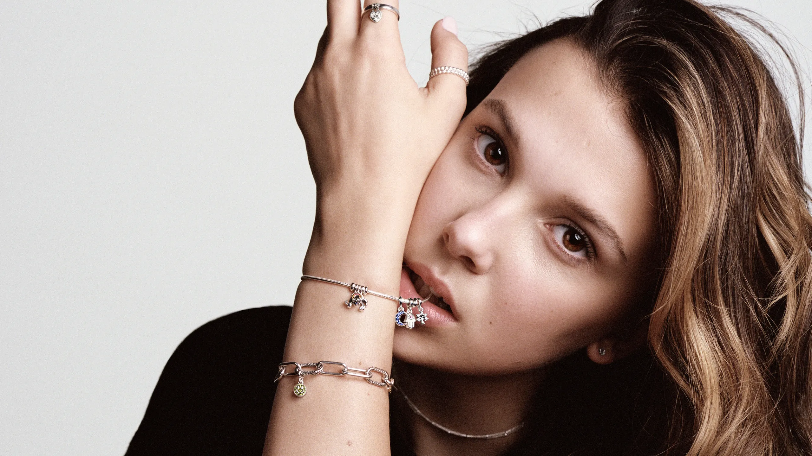

Campanhas Publicitarias
Vogue Eyewear
A chegada da nova coleção de Vogue Eyewear, assinada por Millie Bobby Brown, celebra uma nova fase para a marca. Na campanha que apresenta sua nova embaixadora, a marca explora o estilo multifacetado e irreverente de Millie, além de propor dicas de estilo de vida sugeridas por ela. Ao longo de 2020, serão seis regras que falarão sobre autoconhecimento, aceitação e expressão, em conexão com o perfil da jovem atriz e da marca.
Pandora Me
Em sua primeira campanha para a marca, Millie promove o lançamento da linha Pandora Me, que apresenta joias desenvolvidas para o público jovem. Os charms (como são chamados os pingentes Pandora) da nova coleção são apresentados em tamanho micro para serem usados como acessórios do dia a dia junto ao novo conceito de bracelete da marca e também em brincos e broches.

Moncler
A Moncler anunciou uma parceria com a atriz Millie Bobby Brown.
A marca de luxo anunciou que a jovem de 14 anos, estrela da série
americana de TV "Stranger Things”, foi escolhida como o novo rosto
da próxima campanha institucional da marca. Millie já tem familiaridade
com colaborações com marcas de moda: em 2018 ela já estrelou uma campanha
publicitária da Calvin Klein, fotografada por Willy Vanderperre.